Inception v2 and v3: Factorised Filters, Batch State and Smoothed Targets
Abstract
A deeper multi-branch network can spend too much work on large spatial kernels and become overconfident on limited data. These TF-Slim-style Inception variants combine smaller or asymmetric filters, batch normalisation and optional smoothed targets. We test the underlying identities and state updates, then expose complete compact-model tensor Adam loops for both versions.
Source example: examples/cpp/source/nn/1_convolutional_neural_networks/1.2_classic_architectures/inception_v2_v3.cpp.
The method
The v2 layout uses a bias/ReLU separable 7×7 stem without BN, eight ordinary Inception modules and two reduction modules. v3 uses three A, four asymmetric B and two split C modules, plus two reductions. Ordinary convolutions use beta-only BN (fixed gamma=1, epsilon=.001) and ReLU; main dropout retains .8. The v3 auxiliary head follows the last B module. Reference widths, pooling and branch order follow the linked TF-Slim definitions. He initialization and eager unbiased-variance moving updates are library adaptations.
A linear scalar-channel 7×7 kernel K=v hᵀ can be evaluated by a 1×7 convolution followed by 7×1. Arbitrary kernels need not factor this way. The toy uses x[y,x]=(11y+x+1)/121 and v[i]=h[i]=(i+1)/7. Since sum(k)=28 and sum(i(i+1))=112, the first VALID output is (11×112×28+28×112+28²)/(121×49)=38416/5929. We check both values and input/factor derivatives. Its actual VALID geometries cost 560 factored versus 1225 dense MACs; intermediate edge locations matter. A multichannel factorisation with intermediate width D costs roughly O(NHW k(Cin D+D Cout)), versus O(NHW k² Cin Cout). Real BN/ReLU branches are nonlinear, so this linear identity is a building-block check, not a claim of whole-module equivalence.
Training BN normalises by batch population variance. With m observations, the moving update uses m/(m−1) times that variance, while inference reads stored moments without updating them. Beta-only BN needs Cout learned offsets and 2 Cout moving scalars in addition to the kernel. The rectangular 1×3 fixture checks both output and one eager EMA update independently.
Uniform label smoothing uses q=(1−epsilon)one_hot(y)+epsilon/C. The loss is
For logits (10,0,0) and epsilon=.1 it adds exactly 2/3 to the unsmoothed NLL; its gradient reduces the overconfident true-class score. Evaluation and checkpoint selection retain ordinary unsmoothed main NLL. The compact v2 objective uses primary cross entropy. The compact v3 objective uses .1 smoothing and .4-weight auxiliary cross entropy. Both models retain every block with quarter widths, BN momentum .9, Adam(.001) and a .0001/2 kernel penalty. Augmented CIFAR-10 batches resize to 64 or 107 pixels. Each fit uses 12,000 images over twelve epochs with batch size 128. Primary NLL on 5,000 validation images selects the parameter and moving-state checkpoints for evaluation on all 10,000 official test images.
The concept diagram below is drawn by dm::graphics::Diagram. Its editable C++
source is the complete block below; regeneration uses the same datamunge toolchain
as the numerical examples. Exports consume the saved local SVG.
#include <dm/dm.hpp>
int main() {
std::filesystem::create_directories("build");
dm::graphics::Diagram diagram;
diagram.node("n0", {0.0, 0}, "Smaller spatial factors\nnormalised branches");
diagram.node("n1", {5.2, 0}, "v2 or asymmetric v3\nall blocks retained");
diagram.node("n2", {10.4, 0}, "Explicit smoothed Adam\nsave weights and BN state");
diagram.edge("n0", "n1").edge("n1", "n2");
diagram.save_svg("build/inception_v2_v3_concept.svg");
}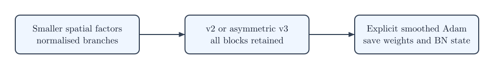
Simple factorisation example
The fixed input and factor sequences make the first output hand-checkable. Derivative comparisons use a shared retained graph only where the two formulas share reshaped factors.
Executed architecture diagram
The diagram below is generated by this model's forward function through
nn::Module::plot. Each style runs a zero-valued shape probe in inference mode;
it does not fit parameters or load a trained checkpoint. Shapes include the
example batch, and learned-value counts deduplicate shared tensors. The flow and LeNet views use named composite blocks; the graph view shows
functional layers and their actual branches. ModelPlotDetail::Operations
expands both into tensor primitives.
All views run left to right with node labels rotated 90 degrees counterclockwise.
Colors identify layer categories and are explained by the legend. The settings below
control fill/edge opacity, category colors, column/lane spacing, label content, font
size and wrapping. All views label names and exact shapes; aggregate learned-value counts remain in the heading. All three views use shared linear shape scales: face axes
follow spatial dimensions, depth follows channel count, and vector height follows
feature count. Batch size is excluded from geometry. A one-pixel visibility floor
keeps very small dimensions visible; it is disclosed in each figure. The scales can
instead use SquareRoot or Logarithmic compression explicitly. LeNet sheet counts
and graph neuron markers are bounded samples; their envelopes follow the shape scales.
Graph neuron bundles are drawn only for actual dense connections. Dots mark omitted
units. Wide diagrams can be scrolled at native size on the website.
Arrows follow the executed differentiable path; constants and deliberately
detached paths are not expanded. The visual conventions are inspired by
[VisualTorch's examples](https://visualtorch.readthedocs.io/en/latest/usage_examples/index.html).
#include <dm/dm.hpp>
int main() {
namespace n = dm::nn;
n::set_num_threads(2);
std::filesystem::create_directories("build");
for (int version : {3, 2}) {
n::ParameterStore p(17), state(17);
n::models::Inception23Config cfg;
cfg.version = version;
cfg.image_size = version == 2 ? 64 : 107;
cfg.width_divisor = 4;
cfg.classes = 10;
cfg.momentum = .9;
n::Module model(
[&](const n::Tensor& image) {
const auto out = n::models::Inception23(p, state, image, cfg, false, false);
auto previous = image;
for (const auto& [name, value] : out.stages) {
n::model_stage(name, previous, value);
previous = value;
}
return out.logits;
},
"Inception v" + std::to_string(version) + " / report configuration");
for (const auto style :
{n::ModelPlotStyle::Graph, n::ModelPlotStyle::LeNet, n::ModelPlotStyle::Flow}) {
n::ModelPlotOptions options;
options.style = style;
options.opacity = .8;
options.edge_opacity = .55;
options.funnel_opacity = .08;
options.colors.convolution = "#64B5CD";
options.colors.pooling = "#5ABF9A";
options.colors.dense = "#748BCB";
options.spacing.layer = 24;
options.spacing.lane = 12;
options.labels.type = n::ModelPlotLabel::NameAndShape;
options.labels.size = 13;
options.labels.wrap = 28;
options.sizing.spatial_scale = n::ModelPlotScale::Linear;
options.sizing.channel_scale = n::ModelPlotScale::Linear;
options.sizing.spatial_size = 96;
options.sizing.channel_size = 42;
options.sizing.minimum_extent = 1;
options.sizing.max_planes = 6;
options.detail = style == n::ModelPlotStyle::Graph ? n::ModelPlotDetail::Layers
: n::ModelPlotDetail::Blocks;
const auto diagram = model.plot(n::zeros({1, cfg.image_size, cfg.image_size, 3}), options);
if (diagram.parameter_count() != p.count())
return 1;
std::string output = "build/inception_v2_v3_architecture_" + std::to_string(version) + ".svg";
if (style != n::ModelPlotStyle::Flow)
output.insert(output.size() - 4, style == n::ModelPlotStyle::Graph ? "_graph" : "_lenet");
diagram.save_svg(output);
const auto label = style == n::ModelPlotStyle::Graph ? "Graph / layers"
: style == n::ModelPlotStyle::LeNet ? "LeNet / blocks"
: "Flow / blocks";
std::print(
"{}: {} nodes, {} distinct learned values.\n",
label,
diagram.nodes().size(),
diagram.parameter_count());
}
}
}Graph / layers: 123 nodes, 1369042 distinct learned values. LeNet / blocks: 23 nodes, 1369042 distinct learned values. Flow / blocks: 23 nodes, 1369042 distinct learned values. Graph / layers: 97 nodes, 639825 distinct learned values. LeNet / blocks: 20 nodes, 639825 distinct learned values. Flow / blocks: 20 nodes, 639825 distinct learned values.
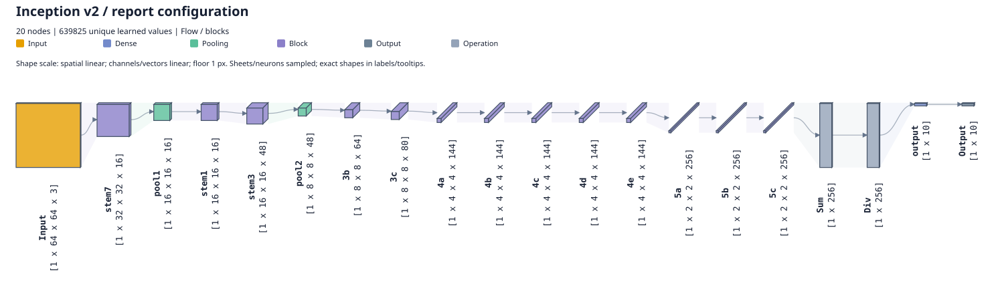
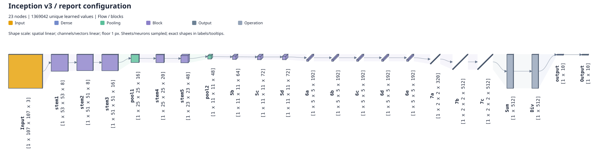
Graph and LeNet views
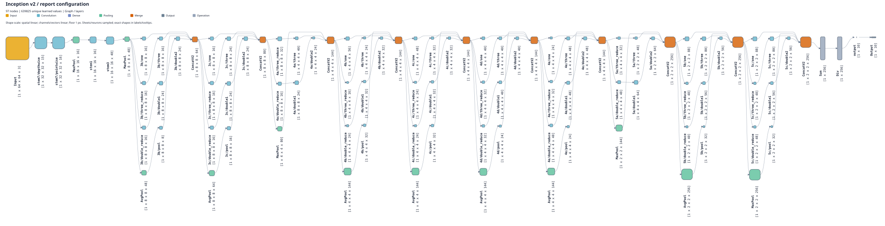
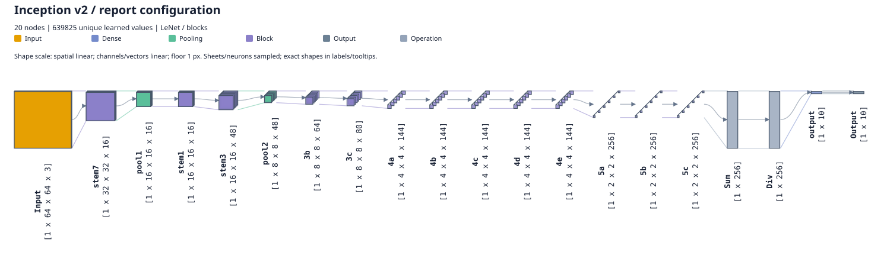
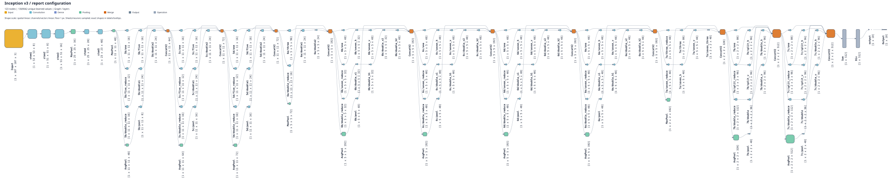
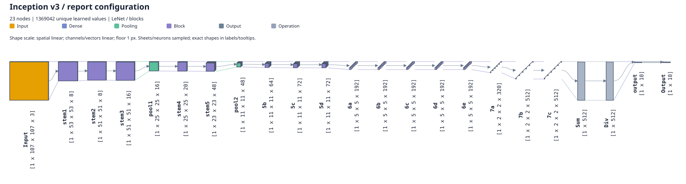
#include <dm/dm.hpp>
int main() {
namespace n = dm::nn;
const auto type = n::DType::Float64;
const auto x =
(n::linspace(1, 121, 121, type).reshape({1, 11, 11, 1}) / 121).detach().requires_grad_();
const auto vertical = (n::linspace(1, 7, 7, type) / 7).detach().requires_grad_();
const auto horizontal = (n::linspace(1, 7, 7, type) / 7).detach().requires_grad_();
const auto v = vertical.reshape({7, 1, 1, 1}), h = horizontal.reshape({1, 7, 1, 1});
const auto valid = n::conv_options(1, n::Padding::Valid);
const auto factored = n::conv2d(n::conv2d(x, h, valid), v, valid);
const auto dense = n::conv2d(x, v * h, valid);
const auto a =
n::grad(n::mean(n::square(factored)), {x, vertical, horizontal}, {.retain_graph = true});
const auto b = n::grad(n::mean(n::square(dense)), {x, vertical, horizontal});
double gradient_error = 0;
for (size_t i = 0; i < a.size(); ++i)
gradient_error = std::max(gradient_error, n::max(n::abs(a[i] - b[i])).item());
const double value_error = n::max(n::abs(factored - dense)).item();
if (value_error > 1e-12 || gradient_error > 1e-10 ||
std::abs(factored.at({0, 0, 0, 0}) - 38416. / 5929) > 1e-12)
return 1;
auto layout = dm::graphics::RLayout::create(1, 2);
layout
.add(n::plot_tensor_map((v * h).reshape({7, 7})).title("Rank-one 7x7 kernel: v times h"))
.add(n::plot_tensor_map(factored.reshape({5, 5}))
.title("Two factors equal one dense VALID filter"));
std::filesystem::create_directories("build");
layout.size(1100, 470).fit_panels().save_svg("build/inception_v2_v3_factorisation.svg");
std::print("First output {:.9f}, expected 38416/5929. Value error {:.12f}; maximum "
"input/factor gradient error {:.12f}.\nVALID geometry uses 11x5x7 + 5x5x7 = 560 "
"factored MACs versus 5x5x49 = 1225 dense MACs.\n",
factored.at({0, 0, 0, 0}), value_error, gradient_error);
}First output 6.479338843, expected 38416/5929. Value error 0.000000000000; maximum input/factor gradient error 0.000000000000. VALID geometry uses 11x5x7 + 5x5x7 = 560 factored MACs versus 5x5x49 = 1225 dense MACs.
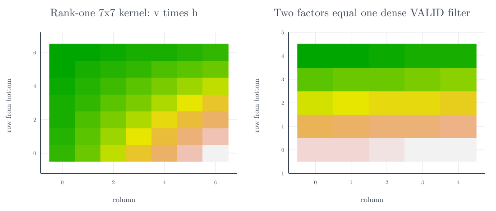
Checking normalisation and smoothing
The batch-state fixture and three-step logit optimization isolate two mechanisms that would otherwise be hidden inside a larger network.
#include <dm/dm.hpp>
int main() {
namespace n = dm::nn;
const auto type = n::DType::Float64;
n::ParameterStore p(17, type), state(17, type);
n::models::ConvNormConfig cfg;
cfg.momentum = .5;
const auto x = n::linspace(1, 6, 6, type).reshape({1, 2, 3, 1});
{
n::NoGradGuard guard;
n::models::NormalizedConv(p, state, "rect", x, 2, 1, 3, cfg, 1, "SAME", false);
}
p.set("rect/W", n::tensor({1., -1., 1., -1., 1., -1.}, {1, 3, 1, 2}).to(type));
const auto raw = n::conv2d(x, p.at("rect/W"));
const auto mean = n::mean(raw, {0, 1, 2}, true);
const auto variance = n::mean(n::square(raw - mean), {0, 1, 2}, true);
cfg.training = true;
const auto y =
n::models::NormalizedConv(p, state, "rect", x, 2, 1, 3, cfg, 1, "SAME", false);
const double error = n::max(n::abs(y - (raw - mean) / n::sqrt(variance + .001))).item();
const double mean_error =
n::max(n::abs(state.at("rect/bn/moving_mean") - .5 * mean.reshape({2}))).item();
const double variance_error = n::max(n::abs(state.at("rect/bn/moving_var") -
(.5 + .5 * variance.reshape({2}) * 6. / 5.)))
.item();
if (p.count() != 8 || state.count() != 4 || p.contains("rect/bn/gamma") ||
std::max({error, mean_error, variance_error}) > 1e-12)
return 1;
std::print("Rectangular beta-only BN: {} learned scalars, {} moving scalars; output and "
"one-step moving moments match to {:.12f}.\n",
p.count(), state.count(), std::max({error, mean_error, variance_error}));
n::ParameterStore scores(17, type);
scores.set("logits", n::tensor({10., 0., 0.}, {1, 3}).to(type));
const auto labels = n::tensor({0}).to(n::DType::Int64);
const double nll = n::sparse_softmax_cross_entropy(scores.at("logits"), labels).item();
const double smoothed =
n::sparse_softmax_cross_entropy(scores.at("logits"), labels, n::Reduction::Mean, .1)
.item();
if (std::abs(smoothed - nll - 2. / 3) > 1e-12)
return 1;
n::OptimizerConfig options;
options.kind = n::OptimizerKind::Adam;
n::Optimizer optimizer(scores, .01, options);
for (int step = 0; step < 3; ++step)
optimizer.minimize(
n::sparse_softmax_cross_entropy(scores.at("logits"), labels, n::Reduction::Mean, .1));
if (scores.at("logits").at({0, 0}) >= 10)
return 1;
std::print(
"Before updates: unsmoothed NLL {:.9f}, smoothed CE {:.9f}=NLL+2/3.\nThree explicit "
"Adam updates reduce the overconfident true-class logit from 10 to {:.6f}.\n",
nll, smoothed, scores.at("logits").at({0, 0}));
}Rectangular beta-only BN: 8 learned scalars, 4 moving scalars; output and one-step moving moments match to 0.000000000000. Before updates: unsmoothed NLL 0.000090796, smoothed CE 0.666757462=NLL+2/3. Three explicit Adam updates reduce the overconfident true-class logit from 10 to 9.970000.
Checking full topology
Both canonical models check every forward stage and learned-tensor gradient. The compact controls also verify that inference preserves moving statistics.
#include <dm/dm.hpp>
int main() {
namespace n = dm::nn;
n::set_num_threads(2);
for (int version : {2, 3}) {
n::Generator fixture(23);
n::ParameterStore p(17), state(17);
n::models::Inception23Config cfg;
cfg.version = version;
cfg.image_size = version == 2 ? 224 : 299;
const auto out = n::models::Inception23(
p, state, n::normal({1, cfg.image_size, cfg.image_size, 3}, 0., .2, fixture), cfg, false, true);
int64_t aux = 0;
for (size_t i = 0; i < p.size(); ++i)
if (p.names()[i].starts_with("aux/"))
aux += p.parameters()[i].numel();
const auto main = p.count() - aux;
const std::vector<std::pair<int64_t, int64_t>> expected =
version == 2
? std::vector<std::pair<int64_t, int64_t>>{{112, 64}, {56, 64}, {56, 64},
{56, 192}, {28, 192}, {28, 256},
{28, 320}, {14, 576}, {14, 576},
{14, 576}, {14, 576}, {14, 576},
{7, 1024}, {7, 1024}, {7, 1024}}
: std::vector<std::pair<int64_t, int64_t>>{
{149, 32}, {147, 32}, {147, 64}, {73, 64}, {73, 80}, {71, 192},
{35, 192}, {35, 256}, {35, 288}, {35, 288}, {17, 768}, {17, 768},
{17, 768}, {17, 768}, {17, 768}, {8, 1280}, {8, 2048}, {8, 2048}};
if (main != (version == 2 ? 11178336 : 23817352) || aux != (version == 2 ? 0 : 3325800) ||
state.count() != (version == 2 ? 19776 : 36224) ||
out.stages.size() != expected.size())
return 1;
for (size_t i = 0; i < expected.size(); ++i)
if (out.stages[i].second.shape() !=
n::Shape{1, expected[i].first, expected[i].first, expected[i].second})
return 1;
if (out.logits.shape() != n::Shape{1, 1000} ||
out.auxiliary.size() != static_cast<std::size_t>(version == 3))
throw std::runtime_error("Unexpected canonical head shapes");
auto objective = n::mean(n::square(out.logits));
for (const auto &auxiliary : out.auxiliary) {
if (auxiliary.shape() != n::Shape{1, 1000})
throw std::runtime_error("Unexpected auxiliary classes");
objective = objective + .4 * n::mean(n::square(auxiliary));
}
const auto gradients = n::grad(objective, p.parameters());
for (std::size_t i = 0; i < gradients.size(); ++i) {
const double magnitude = n::max(n::abs(gradients[i])).item();
if (!std::isfinite(magnitude) || magnitude <= 0.)
throw std::runtime_error("Expected a finite nonzero derivative through " + p.names()[i]);
}
std::println("Checked {} canonical v{} learned parameter tensors.", gradients.size(), version);
std::print("Full v{}: {} main parameters, {} auxiliary parameters, {} moving scalars; {} "
"stage shapes verified.\n",
version, main, aux, state.count(), expected.size());
}
for (int version : {2, 3}) {
n::ParameterStore p(17), state(17);
n::Generator rng(29);
n::models::Inception23Config cfg;
cfg.version = version;
cfg.image_size = version == 2 ? 64 : 107;
cfg.classes = 3;
cfg.width_divisor = 8;
cfg.momentum = .9;
const auto x = n::normal({2, cfg.image_size, cfg.image_size, 3}, 0, .2, rng);
const auto net = n::models::Inception23(p, state, x, cfg, true, true);
auto loss = n::mean(n::square(net.logits));
for (const auto &a : net.auxiliary)
loss = loss + .4 * n::mean(n::square(a));
const auto gradients = n::grad(loss, p.parameters());
for (const auto &g : gradients)
if (!std::isfinite(n::sum(n::abs(g)).item()))
return 1;
const auto saved = state.flatten();
n::NoGradGuard guard;
n::models::Inception23(p, state, x, cfg);
if (state.flatten() != saved)
return 1;
std::print("Compact v{}: all {} parameter-tensor gradients finite; inference leaves BN "
"state unchanged.\n",
version, gradients.size());
}
}Checked 141 canonical v2 learned parameter tensors. Full v2: 11178336 main parameters, 0 auxiliary parameters, 19776 moving scalars; 15 stage shapes verified. Checked 196 canonical v3 learned parameter tensors. Full v3: 23817352 main parameters, 3325800 auxiliary parameters, 36224 moving scalars; 18 stage shapes verified. Compact v2: all 141 parameter-tensor gradients finite; inference leaves BN state unchanged. Compact v3: all 196 parameter-tensor gradients finite; inference leaves BN state unchanged.
Dataset example
These are original images in class-ID order before crop/flip transforms and resizing.
#include <dm/dm.hpp>
int main() {
namespace n = dm::nn;
std::filesystem::path cache;
if (const auto *p = std::getenv("DATAMUNGE_DATA_DIR"))
cache = p;
else if (const auto *p = std::getenv("XDG_CACHE_HOME"))
cache = std::filesystem::path(p) / "datamunge/datasets";
else
cache = std::filesystem::path(std::getenv("HOME")) / ".cache/datamunge/datasets";
dm::datasets::fetch("cifar10", (cache / "cifar10").string());
const auto raw =
n::data::LoadCifar({cache / "cifar10/data_batch_1.bin"}, n::data::Cifar::k10);
const auto images = n::cast(raw.images, n::DType::Float32) / 255.;
const auto labels = raw.labels;
std::vector<int64_t> rows;
for (int cls = 0; cls < 10; ++cls) {
for (int64_t row = 0; row < labels.numel(); ++row)
if (labels.at({row}) == cls) {
rows.push_back(row);
break;
}
}
if (rows.size() != 10)
return 1;
std::filesystem::create_directories("build");
n::plot_tensor_images(n::take_rows(images, rows), 5)
.title("CIFAR-10: one RGB image per class")
.size(1000, 530)
.save_svg("build/inception_v2_v3_inputs.svg");
std::print("One original cached training image per class, IDs 0..4 then 5..9.\n");
}One original cached training image per class, IDs 0..4 then 5..9.
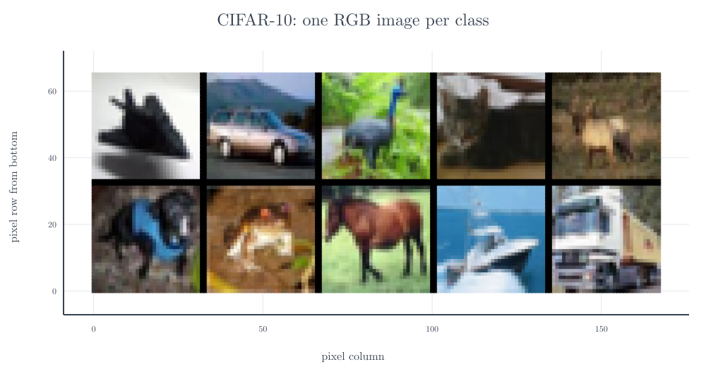
The loop fits each version separately. It constructs auxiliary leaves before the optimizer, then omits auxiliary heads during validation and test inference. The primary NLL trace stays unsmoothed even when the fitted objective is smoothed.
#include <dm/dm.hpp>
int main() {
int rendered_confusions = 0;
namespace n = dm::nn;
n::set_num_threads(2);
std::filesystem::path cache;
if (const auto *p = std::getenv("DATAMUNGE_DATA_DIR"))
cache = p;
else if (const auto *p = std::getenv("XDG_CACHE_HOME"))
cache = std::filesystem::path(p) / "datamunge/datasets";
else
cache = std::filesystem::path(std::getenv("HOME")) / ".cache/datamunge/datasets";
dm::datasets::fetch("cifar10", (cache / "cifar10").string());
const auto development = n::load_cifar10((cache / "cifar10").string(), "train");
if (development.images.shape() != n::Shape{50000, 32, 32, 3})
throw std::runtime_error("Expected all CIFAR-10 development rows");
std::vector<std::int64_t> order(50000);
std::iota(order.begin(), order.end(), 0);
std::mt19937_64 split(2026);
std::shuffle(order.begin(), order.end(), split);
const std::vector<std::int64_t> fitting(order.begin(), order.begin() + 12000);
const std::vector<std::int64_t> held_out(order.begin() + 45000, order.end());
const auto tx = n::take_rows(development.images, fitting);
const auto ty = n::take_rows(development.labels, fitting);
const auto vx = n::take_rows(development.images, held_out);
const auto vy = n::take_rows(development.labels, held_out);
std::filesystem::create_directories("build");
auto layout = dm::graphics::RLayout::create(1, 2);
dm::dstruct::DataFrame table;
std::vector<std::string> names;
std::vector<double> parameters, moments, selected, validation_nll, train_nll, test_nll, accuracy;
for (int variant : {2, 3}) {
n::models::Inception23Config cfg;
cfg.version = variant;
cfg.image_size = variant == 2 ? 64 : 107;
cfg.classes = 10;
cfg.width_divisor = 4;
cfg.momentum = .9;
const double smoothing = variant == 3 ? .1 : 0.;
const std::string model_name = "Inception v" + std::to_string(variant);
n::ParameterStore p(17), state(17);
auto output = [&](const n::Tensor &image, bool training) {
const auto resized = n::resize_bilinear(image, {cfg.image_size, cfg.image_size});
return n::models::Inception23(p, state, resized, cfg, training, training);
};
const auto predict = [&](const n::Tensor &images) {
n::NoGradGuard guard;
std::vector<n::Tensor> result;
for (std::int64_t at = 0; at < images.size(0); at += 128) {
const auto rows = n::slice_axis(images, 0, at, std::min(at + 128, images.size(0)));
result.push_back(output(2 * rows - 1, false).logits);
}
return n::concat(result, 0);
};
// Construct every leaf and auxiliary head before the optimizer captures p.
{
n::NoGradGuard guard;
n::models::Inception23(p, state, n::zeros({1, cfg.image_size, cfg.image_size, 3}), cfg, false,
true);
}
n::OptimizerConfig config;
config.kind = n::OptimizerKind::Adam;
n::Optimizer optimizer(p, .001, config);
n::BatchOrder batches(12000, 128, 29);
n::Generator augmentation(151);
const std::string checkpoint = "build/inception_v2_v3_" + std::to_string(variant);
double best = std::numeric_limits<double>::infinity();
int best_epoch = 0;
std::vector<double> epochs, train, validation;
for (int epoch = 1; epoch <= 12; ++epoch) {
batches.begin_epoch();
n::WeightedMean average;
for (auto rows = batches.next(); !rows.empty(); rows = batches.next()) {
const auto batch = n::take_rows(tx, rows), target = n::take_rows(ty, rows);
const auto net = output(2 * n::study::augment_cifar10(batch, augmentation) - 1, true);
const auto primary = n::sparse_softmax_cross_entropy(net.logits, target);
auto objective =
n::sparse_softmax_cross_entropy(net.logits, target, n::Reduction::Mean, smoothing);
for (const auto &auxiliary : net.auxiliary)
objective = objective + .4 * n::sparse_softmax_cross_entropy(
auxiliary, target, n::Reduction::Mean, smoothing);
for (const auto &w : p.parameters())
if (w.dim() >= 2)
objective = objective + .00005 * n::sum(n::square(w));
optimizer.minimize(objective);
average.add(primary.item(), rows.size());
}
if (average.count() != fitting.size())
throw std::runtime_error("Incomplete fitting epoch");
// Selection is unsmoothed main NLL, without auxiliary heads, augmentation or dropout.
const double val = n::sparse_softmax_cross_entropy(predict(vx), vy).item();
if (!std::isfinite(val))
return 1;
epochs.push_back(epoch);
train.push_back(average.value());
validation.push_back(val);
if (val < best) {
best = val;
best_epoch = epoch;
p.save(checkpoint + "_params.npz");
state.save(checkpoint + "_state.npz");
}
}
p.load(checkpoint + "_params.npz");
state.load(checkpoint + "_state.npz");
n::NoGradGuard guard;
const auto moments_before = state.flatten();
const double restored = n::sparse_softmax_cross_entropy(predict(vx), vy).item();
if (!std::isfinite(restored) || std::abs(restored - best) > 1e-6)
throw std::runtime_error("Restored validation NLL differs");
const auto official = n::load_cifar10((cache / "cifar10").string(), "test");
if (official.images.shape() != n::Shape{10000, 32, 32, 3})
throw std::runtime_error("Expected all official CIFAR-10 test rows");
const auto prediction = predict(official.images), qy = official.labels;
n::ConfusionMatrix native_confusion(10);
native_confusion.add(qy, n::argmax(prediction, 1));
n::save_npz("build/inception_v2_v3_heldout_" + std::to_string(rendered_confusions) + ".npz",
{{"truth", qy}, {"logits", prediction}, {"counts", native_confusion.to_tensor()}});
native_confusion.save_svg("build/inception_v2_v3_confusion_api_" +
std::to_string(rendered_confusions++) + ".svg",
{.title = "inception v2 v3 / selected-checkpoint test counts"});
const double test_loss = n::sparse_softmax_cross_entropy(prediction, qy).item();
if (!std::isfinite(test_loss) || n::accuracy(prediction, qy) < .35)
return 1;
names.push_back(model_name);
parameters.push_back(p.count());
moments.push_back(state.count());
selected.push_back(best_epoch);
validation_nll.push_back(best);
train_nll.push_back(n::sparse_softmax_cross_entropy(predict(tx), ty).item());
if (state.flatten() != moments_before)
throw std::runtime_error("Inference changed the restored normalization state");
test_nll.push_back(test_loss);
accuracy.push_back(n::accuracy(prediction, qy));
auto plot = dm::graphics::RPlot::create();
plot.lines(epochs, train, "training", {37, 99, 235})
.lines(epochs, validation, "validation", {234, 88, 12})
.title(model_name)
.x_label("epoch")
.y_label("unsmoothed primary NLL");
layout.add(plot);
std::print("{}: {} explicit Adam updates.\n", model_name, optimizer.iterations());
}
table.add_column("model", names);
table.add_column("parameters", parameters);
table.add_column("moving_state", moments);
table.add_column("best_epoch", selected);
table.add_column("validation_NLL", validation_nll);
table.add_column("selected_train_NLL", train_nll);
table.add_column("test_NLL", test_nll);
table.add_column("test_accuracy", accuracy);
std::print(
"12000 fit / 5000 validation / 10000 official-test rows per variant, twelve epochs.\n\n{}\n",
table.to_md(6));
layout.size(1100, 470).fit_panels().save_svg("build/inception_v2_v3_training.svg");
}Inception v2: 1128 explicit Adam updates. Inception v3: 1128 explicit Adam updates. 12000 fit / 5000 validation / 10000 official-test rows per variant, twelve epochs.
| model | parameters | moving_state | best_epoch | validation_NLL | selected_train_NLL | test_NLL | test_accuracy |
|---|---|---|---|---|---|---|---|
| Inception v2 | 639825 | 4944 | 12 | 1.282491 | 1.156052 | 1.282967 | 0.5358 |
| Inception v3 | 1383484 | 9056 | 11 | 1.224615 | 1.124302 | 1.222840 | 0.5659 |
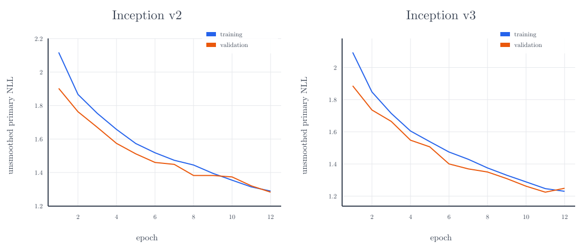
The executed results above report the current selected checkpoint. These fixed small subsets and source budgets do not establish a ranking of architectures. Assess training, validation and test NLL together with the complete held-out confusion. Augmented or batch-moment training objectives and saved-state inference can differ; weak or below-chance outcomes remain part of the result. The independent geometry, parameter-count and derivative checks establish separate implementation claims.
Native confusion matrices
These matrices use the held-out predictions from the executed program above.
The native ConfusionMatrix SVG API labels exact counts with true classes
running from top to bottom and predicted classes from left to right.
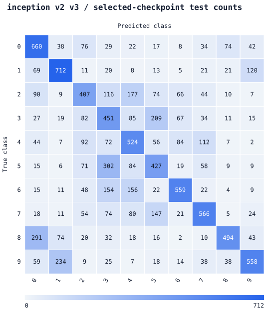
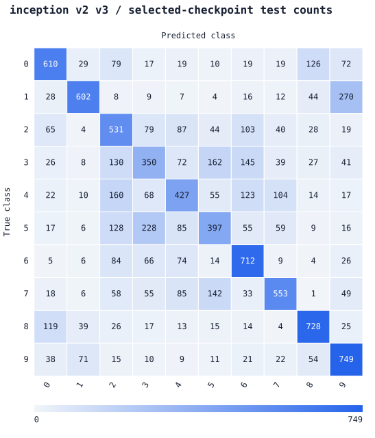
Regenerate every adjacent view
Each alternate architecture or held-out confusion below is copied from this run's local build directory.
#include <filesystem>
int main() {
std::filesystem::create_directories("build");
std::filesystem::copy_file("build/inception_v2_v3_architecture_2_graph.svg", "build/export_inception_v2_v3_architecture_2_graph.svg",
std::filesystem::copy_options::overwrite_existing);
}#include <filesystem>
int main() {
std::filesystem::create_directories("build");
std::filesystem::copy_file("build/inception_v2_v3_architecture_2_lenet.svg", "build/export_inception_v2_v3_architecture_2_lenet.svg",
std::filesystem::copy_options::overwrite_existing);
}#include <filesystem>
int main() {
std::filesystem::create_directories("build");
std::filesystem::copy_file("build/inception_v2_v3_architecture_3.svg", "build/export_inception_v2_v3_architecture_3.svg",
std::filesystem::copy_options::overwrite_existing);
}#include <filesystem>
int main() {
std::filesystem::create_directories("build");
std::filesystem::copy_file("build/inception_v2_v3_architecture_3_graph.svg", "build/export_inception_v2_v3_architecture_3_graph.svg",
std::filesystem::copy_options::overwrite_existing);
}#include <filesystem>
int main() {
std::filesystem::create_directories("build");
std::filesystem::copy_file("build/inception_v2_v3_architecture_3_lenet.svg", "build/export_inception_v2_v3_architecture_3_lenet.svg",
std::filesystem::copy_options::overwrite_existing);
}#include <filesystem>
int main() {
std::filesystem::create_directories("build");
std::filesystem::copy_file("build/inception_v2_v3_confusion_api_0.svg", "build/export_inception_v2_v3_confusion_api_0.svg",
std::filesystem::copy_options::overwrite_existing);
}#include <filesystem>
int main() {
std::filesystem::create_directories("build");
std::filesystem::copy_file("build/inception_v2_v3_confusion_api_1.svg", "build/export_inception_v2_v3_confusion_api_1.svg",
std::filesystem::copy_options::overwrite_existing);
}Conclusion
Factorisation can reduce work under explicit structural assumptions; BN adds moving state; label smoothing changes the fitted target distribution. The separate arithmetic, gradient, state and shape checks establish those mechanisms. The two compact CIFAR-10 fits report held-out predictions from their validation-selected checkpoints.
References
- [Ioffe and Szegedy (2015), Batch Normalization](https://arxiv.org/abs/1502.03167).
- [Szegedy et al. (2016), Rethinking the Inception Architecture for Computer Vision](https://arxiv.org/abs/1512.00567).
- [TF-Slim Inception v2](https://github.com/tensorflow/models/blob/master/research/slim/nets/inception_v2.py).
- [TF-Slim Inception v3](https://github.com/tensorflow/models/blob/master/research/slim/nets/inception_v3.py).
- [CIFAR-10 dataset and binary-file layout](https://www.cs.toronto.edu/~kriz/cifar.html).